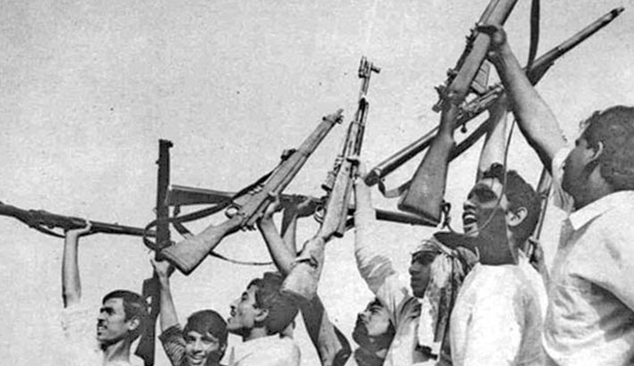
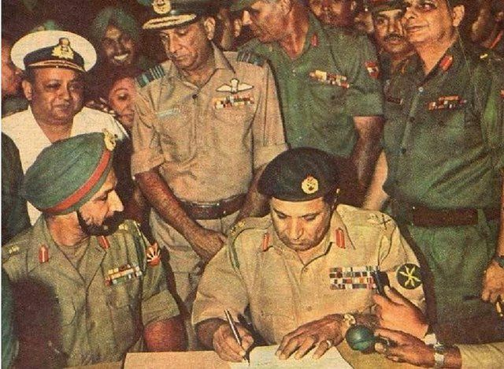

Our History
The history of Bangladesh is marked by centuries of rich cultural evolution and political transformation. Once part of ancient Bengal, the region saw the rise of powerful dynasties like the Mauryas, Guptas, and Pala Empire. It later became a part of the Mughal Empire, contributing to its cultural and economic vibrancy. In the 19th century, Bengal was under British colonial rule until India’s partition in 1947, when East Bengal became East Pakistan. However, cultural and linguistic differences led to growing tensions between East and West Pakistan, culminating in the Bangladesh Liberation War of 1971. After nine months of conflict, Bangladesh gained independence, with Sheikh Mujibur Rahman becoming the nation's founding leader. Since then, it has evolved as a sovereign country, facing challenges but also making significant progress in economic growth and development.
 
The 1971 Bangladesh Liberation War was a pivotal conflict that led to the creation of Bangladesh as an independent nation. It began as a result of deep political and cultural tensions between East Pakistan (now Bangladesh) and West Pakistan (present-day Pakistan). The spark for the war came after the 1970 general elections, where the Awami League, led by Sheikh Mujibur Rahman, won a landslide victory in East Pakistan but was denied political power by the West Pakistani government. On March 25, 1971, the Pakistani military launched "Operation Searchlight" to suppress the growing independence movement in East Pakistan, leading to widespread violence, mass killings, and atrocities. The brutal military crackdown targeted civilians, intellectuals, and freedom fighters, sparking a fierce resistance movement. The Mukti Bahini, or Bangladeshi guerrilla forces, alongside support from the Indian military, fought against the Pakistani army. The war culminated in a decisive victory for the Bangladeshis, with Pakistani forces surrendering on December 16, 1971. This day is celebrated as Victory Day in Bangladesh. The war resulted in significant loss of life and the displacement of millions, but it ultimately led to the birth of Bangladesh as an independent nation.